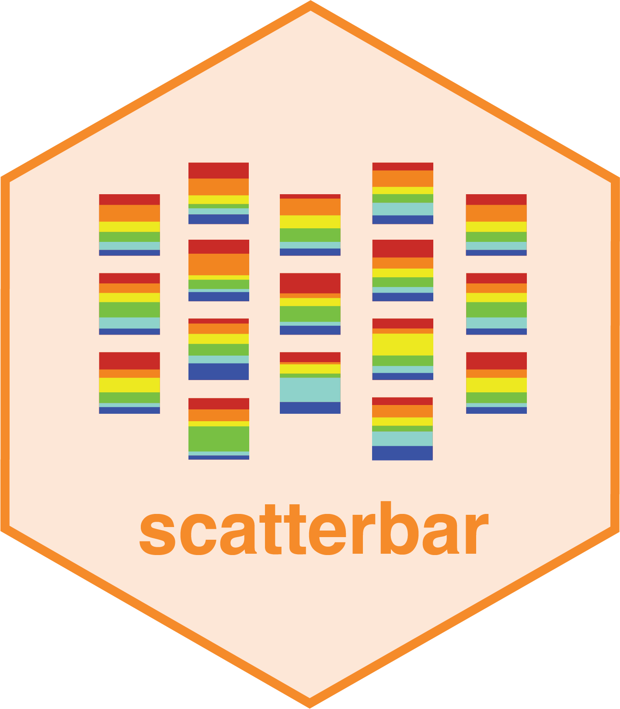

Skills


Software Developer @ JHU
Hello! I am a software developer at the JEFWorks Lab at Johns Hopkins University, where I combine my passion for coding, innovation, and scientific discovery to tackle some of the most exciting challenges in computational biology and genomic data science.
I recently graduated from Johns Hopkins University with a B.S in Computer Science and Chemical & Biomolecular Engineering. With a strong foundation in cell biology and computation and a keen interest in machine learning, computer vision, and bioinformatics, I am dedicated to developing open-source software that empowers researchers to uncover meaningful insights from complex datasets.
My current focus is on spatial transcriptomics, where I design and implement machine learning and statistical models to visualize and analyze high-dimensional biological data. Whether it's developing scalable pipelines, applying advanced algorithms, or collaborating across disciplines, I thrive on creating solutions that make a real-world impact.
A pipeline built in R and Python to convert spatial transcriptomics data into pixel-based images for visualizing cell segmentations and RNA species distributions. Utilizes ResNet models, dimensionality reduction techniques (PCA, t-SNE), and clustering algorithms to identify subcellular RNA heterogeneity and distinguish unique cell types based on gene expression profiles. Presented at the 2024 BMES Annual Conference.
An R package designed for visualizing proportional data across spatial coordinates through scattered stacked bar plots. Built with ggplot2, dplyr, and tidyr, the package offers customizable visualizations for spatial data analysis and is published on GitHub. Featured in a peer-reviewed publication on bioRxiv, highlighting its application in spatial transcriptomics.
A machine learning model built using PyTorch to predict COVID-19 hospitalization and ICU admissions based on CDC surveillance data. Achieved a 94.4% PR AUC score with a Random Forest classifier through hyperparameter optimization and 3-fold cross-validation. Balanced class sizes to improve classification accuracy and reduce false positives in healthcare outcome predictions.
A real-time drowsiness detection system using OpenCV, Mediapipe, and dlib for facial landmark recognition. Analyzes Eye Aspect Ratio (EAR) and Mouth Aspect Ratio (MAR) to classify driver states as "drowsy" or "non-drowsy." Trained on the NTHUDDD2 dataset with multiple machine learning models, achieving a peak accuracy of 70.23% and contributing to advancements in road safety technology.
A full-stack chatbot developed to provide accessible cancer education to patients and families. Built with HTML, CSS, JavaScript, and React, featuring functionalities like dynamic chatboxes, response delay handling, and accessibility improvements. Collaborated with stakeholders to refine design and back-end features, resulting in increased user satisfaction. Showcased at Johns Hopkins Design Day.
A project collaboration with the Universidad de Madrid Carlos exploring the Lottery Ticket Hypothesis through the development of a genetic algorithm for optimizing supermasks in convolutional neural networks. Applied to the MNIST dataset using PyTorch, achieving performance improvements of 8.5% over random guessing.
scatterbar
, CRAN